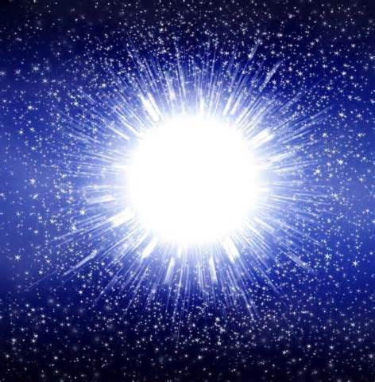

Teoria del Big Bang

Teoria del Big Bang
De acuerdo con la teoría estándar, nuestro universo surgió como una "singularidad" hace alrededor de 13,7 mil millones de años. Qué es una "singularidad" y de dónde viene? Bueno, para ser honesta, no sabemos a ciencia cierta. Las singularidades son zonas que desafían nuestra comprensión actual de la física. Se cree que existen en el núcleo de "agujeros negros". Los agujeros negros son zonas de presión gravitacional intenso. Se cree que la presión es tan intensa que la materia finito termina en la verdad simplificada a una densidad infinita (un concepto matemático que realmente perturba la mente). Estas zonas de densidad infinita se llaman "singularidades". Se cree que nuestro universo comenzó como algo infinitamente pequeño, infinitamente caliente, infinitamente denso - una singularidad. ¿De donde vino? No sabemos. Por qué apareció? No sabemos.
Después de su aparición inicial, esta singularidad parecer inflado (el "Big Bang"), se expandió y enfriado-, desde muy, muy pequeña y muy, muy caliente, con el tamaño y la temperatura de nuestro universo actual. Continúa expandiéndose y enfriándose hasta nuestros días y estamos dentro de ella: increíbles criaturas que viven en un planeta especial, girando en torno a una hermosa estrella agrupado con varios miles de millones de otras estrellas en una galaxia que vuelan a través del cosmos, y todo esto ocurre dentro de una expansión universo que comenzó como una singularidad infinitesimal, que apareció de la nada por razones desconocidas. Esta es la teoría del Big Bang.
La Teoría del Big Bang - Conceptos erróneos comunes
Hay muchos conceptos erróneos acerca de la teoría del Big Bang. Por ejemplo, tendemos a imaginar una gigantesca explosión. Los expertos, sin embargo, dijeron que ha habido una explosión; Era (y sigue siendo) una expansión. En vez de imaginar un estallido del globo y la liberación de su contenido, imaginar un globo en expansión: una infinitesimalmente pequeño globo en expansión con el tamaño de nuestro universo actual.
Otra idea errónea es que tendemos a imaginar esta singularidad como una pequeña bola de fuego que aparece en algún lugar en el espacio. Según muchos expertos, sin embargo, el espacio no existía antes del Big Bang. A finales de los años 60 y principios de los 70, cuando el hombre pisó la luna por primera vez, "tres astrofísicos británicos, Steven Hawking, George Ellis, y Roger Penrose dirigieron su atención a la teoría de la relatividad y sus implicaciones en la noción del tiempo. en 1968 y 1970 se publicaron artículos que se extendió la teoría de la relatividad general para incluir mediciones de tiempo y espacio. de acuerdo con sus cálculos, el tiempo y el espacio tuvieron un principio finito que se correspondía con el origen de la materia y la energía de la singularidad no apareció en el espacio ; en cambio, el espacio comenzó en el interior de la singularidad antes de la singularidad, no existía nada - ni el espacio ni el tiempo, ni materia ni energía - nada no sabemos de dónde viene, por qué estamos aquí, o incluso donde estamos.. Todo lo que realmente sabemos es que estamos en ella y que en algún momento no existía y ni nosotros.
La Teoría del Big Bang - La evidencia en favor de la teoría
Cuáles son las pruebas clave que apoya la teoría del Big Bang?
En primer lugar, estamos razonablemente seguros de que el universo tuvo un principio.
En segundo lugar, las galaxias parecen estar alejándose de nosotros a velocidades proporcionales a sus distancias. Esto se llama "Ley de Hubble", llamada así debido a Edwin Hubble (1889-1953), el descubridor de este fenómeno en 1929. Esta observación apoya la expansión del universo y sugiere que el universo se comprimió en algún momento.
En tercer lugar, si el universo era inicialmente muy, muy caliente, como sugiere el Big Bang, debemos ser capaces de encontrar algún rastro de ese calor. En 1965, los radioastrónomos Arno Penzias y Robert Wilson descubrieron un Fondo Cósmico de Microondas (CMB) de 2.725 grados Kelvin (-454.765 grados Fahrenheit, -270.425 grados centígrados) que impregna el universo observable. Se cree que este es el resto por el cual los científicos estaban buscando. En 1978, Penzias y Wilson recibieron el Premio Nobel de Física por sus descubrimientos.
Por último, se cree que la abundancia de "elementos de luz" hidrógeno y el helio se encontró en el universo observable apoyando las orígenes del modelo del Big Bang.
La Teoría del Big Bang - La única teoría plausible
?
Es la teoría del Big Bang, el único modelo estándar compatibles con estas evidencias? No, es sólo el modelo más popular. El astrofísico conocido internacionalmente George Ellis explica: "La gente tiene que ser consciente de que hay una gama de modelos que pueden explicar las observaciones ... Por ejemplo, puedo construir un universo con simetría esférica de la Tierra en su centro, y se puede no probar lo contrario en base a observaciones .... Sólo puede eliminar por razones filosóficas. en mi opinión, no hay nada malo en ello. lo que quiero aclarar es que estamos utilizando criterios filosóficos en la elección de nuestros modelos. Una gran cantidad de cosmología trata de ocultarlo.
En 2003, el físico Robert Gentry propone una alternativa atractiva a la teoría estándar, una alternativa que es también la prueba enumerados anteriormente. El Dr. Gentry afirma que el modelo estándar del Big Bang, se basa en un paradigma defectuoso (la expansión paradigma Friedmann-Lemaître del espacio-tiempo), lo que, según él, es incompatible con los datos empíricos. En su lugar, opta por basar su modelo en el paradigma del espacio-tiempo estático de Einstein, que dice ser la "verdadera Rosetta cósmica". Gentry ha publicado varios artículos describiendo lo que él considera como graves fallas en el modelo estándar del Big Bang. Otro disidente de alto nivel incluyen el Dr. Hannes Alfvén, premio Nobel, el profesor Geoffrey Burbidge, el Dr. Halton Arp y Sir Fred Hoyle, famoso astrónomo británico, que se cree que es responsable por el término "Big Bang" durante un programa de radio de la BBC en 1950.
La Teoría del Big Bang - Qué hay de Dios?
Cualquier discusión de la teoría del Big Bang no estaría completo sin la pregunta: qué pasa con Dios? Esto se debe a la cosmología (el estudio del origen del universo) es un área donde la ciencia y la teología se encuentran. La creación fue un evento sobrenatural, es decir, se produjo fuera del reino natural. Este hecho plantea la pregunta: ¿hay alguna otra cosa que existe fuera de la esfera natural? En concreto, hay un maestro arquitecto allí? Sabemos que este universo tuvo un principio. Fue Dios la "Primera Causa"?
No tratamos de responder a esa pregunta en este breve artículo. Sólo hacer la pregunta.
Copyright BEYTUDODEBOM.COM 2019>